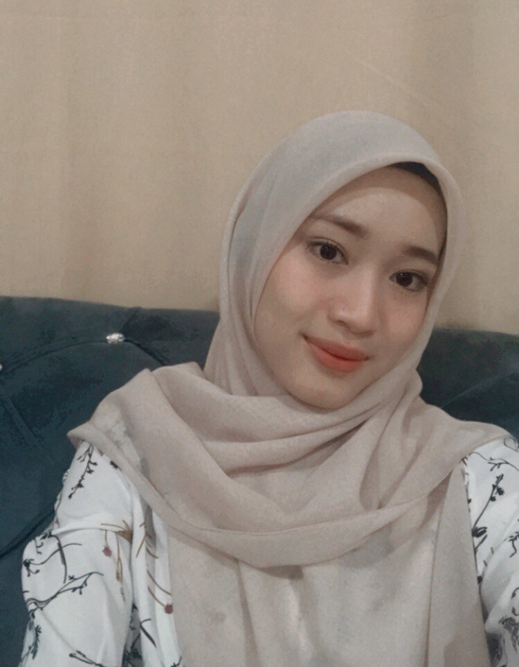

WELCOME TO ZATY'S BLOG

ABOUT ME
Hi, My name is Nurul Ain Izati Binti Adnan. This is my personal website. My age is 20 years old. I am originally from Kota Bharu, Kelantan. I am a Diploma in Information Management student at Uitm Kampus Machang in Kelantan. Furthermore, I am already semester 5 of class D1IM1105F and I will be continuing my studies in the field of information management system in the near future. This website was created as part of my individual assignment in the subject Introduction to Web Content Management and Design (IMD311). This assignment is for Miss Ainatul Mardhiah Binti Mat Nawi.
TODAY IS YOUR OPPORTUNITY TO BUILD THE TOMORROW YOU WANT